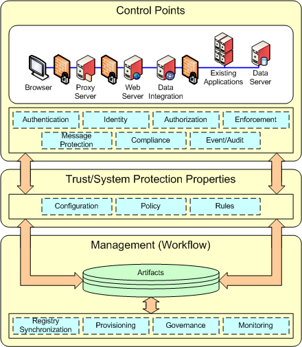

| Концепция: Security Patterns |
 |
|
| Связанные элементы |
|---|
Introduction"Security" is generally perceived to be a complex, mind-numbing discipline. A "pattern" is a term that most people believe they have an intuitive understanding of, because it is a natural part of human education to recognize and generalize about perceived patterns. For the purposes of this exercise we will take the following as working definitions:
So, to attempt to couple the two terms, "security" and "patterns" can introduce some tension. There have been various attempts to produce security patterns (see appendix A). This paper has attempted to collect and codify the material that has been gathered over several years by various security practioners from various customer engagements producing a strawman for IBM security patterns. The working definition for "security patterns" in the context of this paper is:
Within the software development community there is currently an effort to establish [3] a methodology for pattern development.
The fundamental point of confusion, is that patterns, like beauty, seem to be in the eye of the beholder. So, if you get any 5 security people together, they will define patterns specific to their area of interest. It is for this reason, that I digress into a discussion of "roles" to help group patterns by the community of interest. Who’s on First?Within the world of software, there are people who design things, people who draw pictures and write documents, people who write code, and people who pull all the pieces together and provide computer based systems. Each organization probably has its own way of defining the tasks, but there are archetypal roles.
In any medium to large organization, tasks are assigned to different people based on their organizational responsibilities. In general, business analysts and business applications need to protect the informational assets of the business. They drive the creation of the business application requirements for security. Archetype 1 – Business AnalystIn organizations that have to comply with legislative or regulatory requirements there is sometimes a specific set of tasks at the "C" level to monitor and enforce these regulations. The CSO and CPO generally work with business analysts to compile a set of corporate guidelines and requirements…..the fundamentals of good business practice. Archetype 2 - Chief Security (Privacy) OfficerMost organizations of any size today have a firewall. Even individual users in their homes establish firewalls for their home networks. Someone has to setup and maintain these devices. Some are simple, some are complex. Archetype 3 - Network Security OfficerWhen it comes to actually understanding and selecting some kind of security mechanisms to meet the requirements specified by the business, there are many people that work together to implement security. Archteype 4- Security ArchitectTBD: Security Developer, Security Deployer, Security Policy Author, Security Policy Administrator, Security System Adminstrator Looking at patterns by RoleIt is the intent of this paper and the accompanying slide deck, to provide a strawman for identifying and illustrating existing common security patterns within the IBM customer- business analyst community. The task of the e-business patterns effort is the reconciliation of the volume of information into an abstraction that is general enough to be grasped by the non-security practitioner and yet maintains enough context to provide a concrete underpinning to the security community. IBM is a microcosm of the larger software industry in that it represents both product development and business application service development, as well as middleware products for management and deployment of applications. There are several methodologies for designing and developing secure applications (i.e MASS, Open Group, JAAS) but several of these are targetted to the trained security professional with a detailed understanding of technology. So, one group of patterns will be "security architectural patterns". Detailed architectures for security are needed for developing the technology to provide security solutions and these are referenced by the patterns where appropriate but it is not the intent of this paper to document all the security architectural patterns. What is security?The IETF is an organization that has been fundamental to the development of the internet as we know it today. The IETF established a security glossary in 2000, and this captures most if the fundamental concepts of computer security. Improvements are made, new technologies and mechanisms come in and out of use, but the basic definitions remain. The most common components that are in practice today for security include the following: identification and authentication, authorization, assurance, audit, message protection, confidentiality, integrity. Rather than only providing patterns for each individual security mechanism, this strawman has looked across the individual security mechanisms to identify the common characteristics. This white paper focuses on the identification of a “security solution pattern”. These common elements were derived from looking at a detailed set of individual pattern elements for each security mechanism (i.e, authentication---- username, password, Kerberos, PKI) and then abstracting those things that were in common across authentication, authorization, assurance, etc. Looking for common elements in all security patterns resulted in the identification of the 3 sub-pattern elements that are present in some form in any type of security solution:
 To demonstrate how each individual security mechanism can be mapped to these 3 sub-elements we give an example of "identification". Again, from the IETF glossary:
Distinguishing one person from another when invoking an application is a pattern that every business confronts. The strategies for addressing the business problem vary based on the number and diversity of the elements involved in the application and its deployment environment. Some businesses leave the decision about "naming" to the individual applications or maybe to a group of applications in a line of business. Some businesses are constrained by the software in their data centers. Some have tightly coupled the application deployment environment to a strict set of mechanisms. Nonetheless, there is a point at which an "identifier" is presented to an application, and this is considered to be a "security control point" pattern, for identification. The quanitity and type of information required also varies significantly. An identifier can be a real person’s name, ( i.e, Maryann Hondo ) or a pseudonym ( mhondo). The identifier can be globally unique ( a UUID) or it can be unique within a qualified namespace ( i.e, mhondo@us.ibm.com) . Characteristics of a Security Pattern
References
|
© Copyright IBM Corp. 1987, 2006. Все права защищены.. |